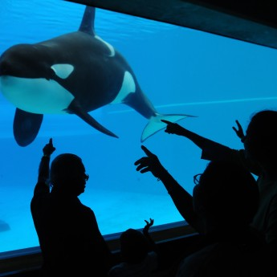

Aquarium
Cá heo
Cá heo là động vật có vú sống ở đại dương và sông nước có quan hệ mật thiết với cá voi. Có gần 40 loài cá heo thuộc 17 chi sinh sống ở các đại dương, số ít còn lại sinh sống tại một số con sông trên thế giới. Kích thước của cá heo có thể từ 1,2 m và 40 kg, cho tới 9,5 m và 10 tấn.
Tốc độ:
Cá heo mõm ngắn: 60 km/h
Tuổi thọ:
Cá heo voi: 29 năm, Cá heo sọc: 55 – 60 năm, Cá voi đầu tròn vây ngắn: 45 năm, Cá heo đốm nhiệt đới: 40 năm